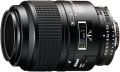

器材库 > 35mm画幅AF定焦镜头 > AF 105/2.8 D Micro

详细规格
镜头类型
微距镜头
发布日期
1993-12
焦距
105mm
最大光圈
f/2.8
最小光圈
f/32
视角（对角）
23.20
镜头结构
9片/8组
光圈叶片
7片
最近对焦距离
31cm
最大放大倍率
1
镜头卡口
Nikon AF
防抖
否
颜色
黑色
尺寸
75×104mm
重量
560g
附件
52mm snap-on 镜头前盖, LF-1 镜头后盖
flyingleaf12013-02-19 13:484.58 分
操作性 4.50耐用性 4.50性价比 4.50解像力 5.00色彩还原 4.50机械结构 4.50
京AF50182012-10-06 00:084.25 分
操作性 4.50耐用性 4.50性价比 4.00解像力 4.50色彩还原 4.00机械结构 4.00
jerrycherry2012-07-04 15:124.75 分
操作性 4.50耐用性 5.00性价比 5.00解像力 4.50色彩还原 4.50机械结构 5.00
cybertron2010-11-27 18:434.17 分
操作性 4.00耐用性 4.00性价比 4.50解像力 4.50色彩还原 4.50机械结构 3.50
fsylco2010-02-22 14:574.33 分
操作性 4.50耐用性 4.00性价比 4.00解像力 4.50色彩还原 5.00机械结构 4.00
liusm12342010-01-08 16:544.92 分
操作性 5.00耐用性 5.00性价比 4.50解像力 5.00色彩还原 5.00机械结构 5.00
喜凯瑞2009-01-19 16:424.75 分
操作性 5.00耐用性 4.50性价比 4.50解像力 5.00色彩还原 5.00机械结构 4.50
在江南2009-01-08 14:525 分
操作性 5.00耐用性 5.00性价比 5.00解像力 5.00色彩还原 5.00机械结构 5.00
朱熔剂2008-03-30 11:315 分
操作性 5.00耐用性 5.00性价比 5.00解像力 5.00色彩还原 5.00机械结构 5.00
20915282008-03-30 11:101.58 分
操作性 1.00耐用性 3.00性价比 0.50解像力 2.50色彩还原 1.50机械结构 1.00
我爱器材胜一切2008-03-07 18:524.5 分
操作性 4.00耐用性 5.00性价比 4.50解像力 4.50色彩还原 4.00机械结构 5.00
时空之轮2007-09-25 05:254.92 分
操作性 5.00耐用性 5.00性价比 5.00解像力 5.00色彩还原 5.00机械结构 4.50
二瑞2007-06-21 17:415 分
操作性 5.00耐用性 5.00性价比 5.00解像力 5.00色彩还原 5.00机械结构 5.00
广耳屎2007-03-14 16:484.33 分
操作性 4.00耐用性 5.00性价比 3.00解像力 5.00色彩还原 5.00机械结构 4.00
zhulm56312006-09-13 22:234.67 分
操作性 4.00耐用性 5.00性价比 4.50解像力 5.00色彩还原 5.00机械结构 4.50
innovision2006-07-26 17:184.75 分
操作性 5.00耐用性 5.00性价比 4.00解像力 5.00色彩还原 4.50机械结构 5.00
innovision2006-07-26 17:15
zwl302006-07-08 18:093.58 分
操作性 5.00耐用性 4.50性价比 0.50解像力 3.50色彩还原 3.50机械结构 4.50
光影小龙2006-06-01 15:584.92 分
操作性 5.00耐用性 5.00性价比 4.50解像力 5.00色彩还原 5.00机械结构 5.00
qq8682006-05-27 11:004.58 分
操作性 5.00耐用性 4.50性价比 4.00解像力 5.00色彩还原 4.50机械结构 4.50
zqpro2006-05-11 20:444.92 分
操作性 4.50耐用性 5.00性价比 5.00解像力 5.00色彩还原 5.00机械结构 5.00
光影小龙2006-04-27 13:42
油兰2006-04-23 09:214.75 分
操作性 4.50耐用性 5.00性价比 4.50解像力 5.00色彩还原 5.00机械结构 4.50
magicnight2006-04-03 22:314.17 分
操作性 4.00耐用性 4.00性价比 4.50解像力 4.50色彩还原 4.50机械结构 3.50
cdtyc2006-03-24 16:214.5 分
操作性 5.00耐用性 4.50性价比 3.50解像力 5.00色彩还原 4.50机械结构 4.50
qq8682006-03-24 15:44
豆豆摄影2006-03-24 13:464.67 分
操作性 5.00耐用性 4.50性价比 3.50解像力 5.00色彩还原 5.00机械结构 5.00
ＷＸ知秋一叶2006-02-25 10:394.17 分
操作性 4.50耐用性 4.50性价比 2.50解像力 4.50色彩还原 4.50机械结构 4.50
amati28820012006-02-23 04:244.17 分
操作性 4.50耐用性 3.50性价比 4.50解像力 4.50色彩还原 4.50机械结构 3.50
玩物不丧志2005-12-06 13:224.42 分
操作性 5.00耐用性 4.50性价比 3.50解像力 4.50色彩还原 4.50机械结构 4.50
渐入佳镜2005-11-05 02:494.33 分
操作性 3.50耐用性 4.50性价比 5.00解像力 4.50色彩还原 5.00机械结构 3.50
三色鱼丸2005-07-10 18:064.83 分
操作性 4.50耐用性 5.00性价比 4.50解像力 5.00色彩还原 5.00机械结构 5.00
stone20032005-06-27 22:324.58 分
操作性 5.00耐用性 5.00性价比 3.50解像力 4.50色彩还原 4.50机械结构 5.00
FPSO2005-06-16 01:384.58 分
操作性 4.50耐用性 4.50性价比 4.00解像力 5.00色彩还原 5.00机械结构 4.50
D3X2005-04-29 23:274.5 分
操作性 5.00耐用性 4.50性价比 4.00解像力 4.50色彩还原 4.50机械结构 4.50
成像光谱仪1号2005-04-21 23:354.5 分
操作性 4.50耐用性 5.00性价比 3.00解像力 5.00色彩还原 5.00机械结构 4.50
cxy3602005-03-20 18:123.83 分
操作性 4.50耐用性 3.50性价比 3.50解像力 4.00色彩还原 4.00机械结构 3.50
kensenjiha2005-02-21 00:064.92 分
操作性 5.00耐用性 5.00性价比 5.00解像力 5.00色彩还原 4.50机械结构 5.00
kensenjiha2005-02-20 23:59
卖菜老农2004-11-18 07:484.5 分
操作性 4.50耐用性 4.50性价比 4.50解像力 5.00色彩还原 4.50机械结构 4.00
papa0082004-10-13 21:514.42 分
操作性 4.50耐用性 4.50性价比 3.50解像力 4.50色彩还原 5.00机械结构 4.50
还没想出来2004-10-10 09:05
limbus2004-08-17 03:003.67 分
操作性 3.50耐用性 4.00性价比 3.50解像力 3.50色彩还原 3.50机械结构 4.00
ff1232004-07-02 22:124.33 分
操作性 5.00耐用性 4.50性价比 3.50解像力 5.00色彩还原 4.50机械结构 3.50
wildcat62102004-05-15 13:194.33 分
操作性 4.50耐用性 4.50性价比 4.50解像力 4.50色彩还原 4.50机械结构 3.50
simon_le2004-04-22 15:513.92 分
操作性 4.00耐用性 4.00性价比 4.00解像力 4.00色彩还原 4.00机械结构 3.50
我要2004-04-16 00:163.92 分
操作性 4.00耐用性 4.00性价比 3.50解像力 4.00色彩还原 4.00机械结构 4.00
我要2004-04-16 00:08
medea2004-04-09 18:204.5 分
操作性 4.50耐用性 4.00性价比 4.50解像力 5.00色彩还原 4.50机械结构 4.50
长毛毛2004-04-09 11:354.5 分
操作性 4.50耐用性 4.50性价比 4.50解像力 4.50色彩还原 4.50机械结构 4.50
leeson11252002-04-16 16:594.83 分
操作性 4.50耐用性 5.00性价比 4.50解像力 5.00色彩还原 5.00机械结构 5.00
curtner2002-04-09 23:564.5 分
操作性 4.50耐用性 4.50性价比 4.50解像力 4.50色彩还原 4.50机械结构 4.50
洋仙2002-04-09 16:394.5 分
操作性 4.00耐用性 4.50性价比 4.50解像力 5.00色彩还原 5.00机械结构 4.00
产品图 / 样片
外观图